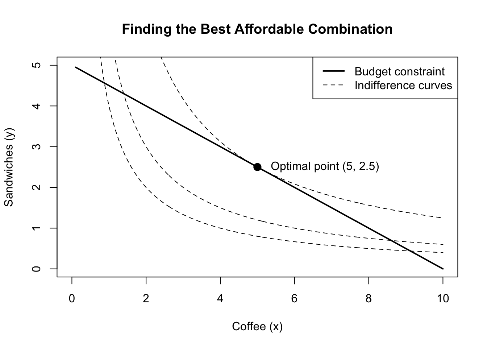

Understanding Lagrange Multipliers
economics
mathematics
A Simple Example
Imagine you have 20 dollars to spend on two things: coffee and sandwiches. A coffee costs 2 dollars, while a sandwich costs 4 dollars.
Suppose your satisfaction can be represented by the utility function
\[ U(x,y)=\sqrt{xy}. \]
Here, \(x\) is the number of coffees and \(y\) is the number of sandwiches.
The Constraint
Since spending cannot exceed 20 dollars, the budget constraint is
\[ 2x+4y=20. \]
This means we cannot freely maximize utility: our choices must stay on the budget line.
Rearranging the equation gives
\[ y = 5 - \frac{1}{2}x. \]
This equation describes all combinations that use the entire budget.
The challenge is therefore not simply to maximize utility, but to find the highest possible utility while staying on the budget constraint.
Why Tangency Matters
Graphically, the optimum occurs where the highest attainable indifference curve is tangent to the budget line. In this example, the optimal point is
\[ (x,y)=(5,2.5). \]
At an interior optimum, the two curves have the same slope, so
\[ \frac{MU_x}{MU_y}=\frac{p_x}{p_y}. \]
This tangency condition is the key intuition behind the Lagrange multiplier method.
Enter the Lagrangian
The geometric explanation is intuitive, but solving the problem graphically becomes difficult when there are many variables or constraints.
This is where the Lagrange multiplier method becomes useful.
We combine the objective function and the constraint into a single expression:
\[ \mathcal{L}(x,y,\lambda) = \sqrt{xy} + \lambda(20-2x-4y). \]
At first, this looks strange. We have introduced a completely new variable, \(\lambda\), even though it was not part of the original problem.
But notice something important: for every feasible choice,
\[ 20-2x-4y=0. \]
Therefore,
\[ \lambda(20-2x-4y)=0. \]
So along the budget constraint, adding this term does not change the value of the utility function at all.
The multiplier simply gives us a way to enforce the constraint while solving the optimization problem.
Solving the Problem
Taking the first-order conditions gives
\[ \frac{\partial \mathcal L}{\partial x} = \frac{1}{2}\sqrt{\frac{y}{x}}-2\lambda=0, \]
\[ \frac{\partial \mathcal L}{\partial y} = \frac{1}{2}\sqrt{\frac{x}{y}}-4\lambda=0, \]
together with the original constraint
\[ 2x+4y=20. \]
Solving these equations gives
\[ \boxed{(x^*,y^*)=(5,2.5)}, \]
exactly the point we identified graphically.
What Does \(\lambda\) Mean?
The multiplier is more than a mathematical trick. It is often called a shadow price: it measures how much the maximum value of the objective would increase if the constraint were relaxed by one unit.
Here, \(\lambda\) tells us approximately how much maximum utility would increase if we had one additional dollar to spend.
For this example,
\[ \lambda^*=\frac{1}{4\sqrt{2}}\approx0.177. \]
So one additional dollar would increase maximum utility by approximately 0.177 units.
So Why Does the Method Work?
The key idea is not the symbol \(\lambda\) itself. The method works because, at a constrained optimum, there is no feasible direction in which we can move and improve the objective.
Geometrically, the objective function and the constraint are tangent at the optimum. Their gradients therefore point in the same direction:
\[ \nabla f = \lambda \nabla g. \]
The multiplier \(\lambda\) tells us how the two gradients are scaled relative to each other.
This is exactly what the first-order conditions of the Lagrangian impose. What initially looks like an artificial mathematical trick is really an algebraic way of expressing the geometry of constrained optimization.
Key Points
Lagrange multipliers can seem unintuitive because the method appears to introduce an arbitrary new variable and somehow turn a constrained problem into a set of ordinary equations.
But there is no magic involved.
The constraint limits where we are allowed to move. At an interior optimum, the objective function is tangent to that constraint, so their gradients must be parallel. The Lagrange multiplier captures this relationship.
Even better, \(\lambda\) has its own interpretation: it tells us how valuable it would be to relax the constraint slightly.
So the next time a mysterious \(\lambda\) appears in an optimization problem, it may help to think of it not as a mathematical trick, but as the value of a little more freedom.